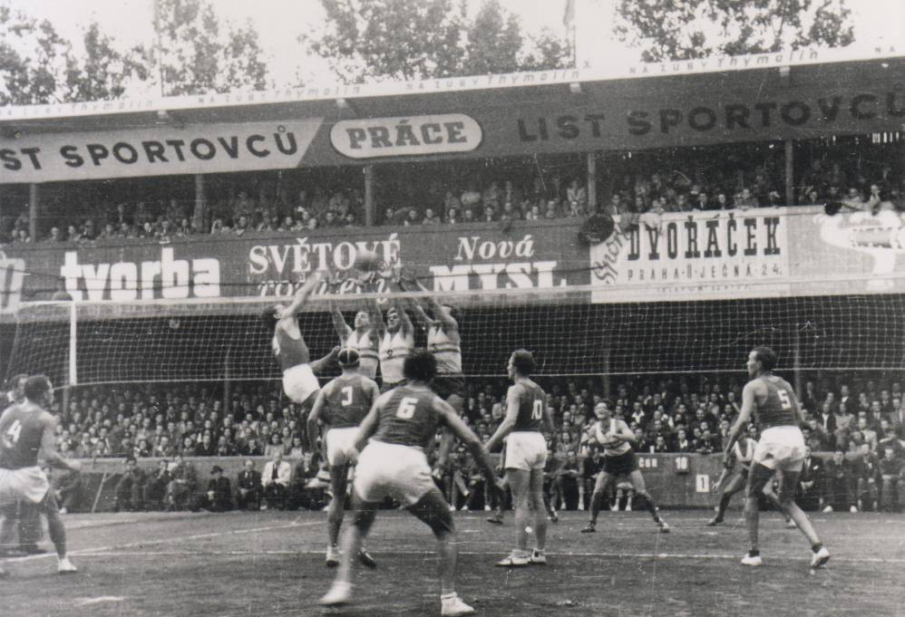

Volei Geral
Chamado frequentemente no Brasil de Vôlei e em Portugal de Vólei é um desporto praticado numa quadra dividida em duas partes por uma rede, possuindo duas equipes de seis jogadores em cada lado. O objetivo da modalidade é fazer passar a bola sobre a rede de modo a que esta toque no chão dentro da quadra adversária, ao mesmo tempo que se evita que os adversários consigam fazer o mesmo. O voleibol é um desporto olímpico, regulado pela Fédération Internationale de Volleyball (FIVB). O voleibol foi inventado em 9 de Fevereiro de 1895 por William George Morgan nos Estados Unidos da América. O objetivo de Morgan, que trabalhava na ACM de Holyoke no Massachusetts, era criar um esporte de equipes sem contato físico entre os adversários de modo a minimizar os riscos de lesão. Inicialmente jogava-se com uma câmara de ar da bola de basquetebol e foi chamado Mintonette, mas rapidamente ganhou popularidade com o nome de volleyball. O criador do voleibol faleceu em 27 de dezembro de 1942 aos 72 anos de idade. Um time que deseja competir em nível internacional precisa dominar um conjunto de seis habilidades básicas, denominadas usualmente sob a rubrica "fundamentos". Elas são: saque, passe, levantamento, ataque, bloqueio e defesa. A cada um destes fundamentos compreende um certo número de habilidades e técnicas que foram introduzidas ao longo da história do voleibol e são hoje consideradas prática comum no esporte.
Como o volei tem sido adotado pelas pessoas do mundo atual?
Em alguns lugares do Brasil, O Volei tem ganhado sua fama de forma imprenscendivel, Locais de treino para o esporte estão sendo instalados em muitas cidades, um exemplo disso é em minha cidade, foram alocados dois lugares onde tem-se a oportunidade de praticar o esporte, respectivamente, Ágatha & Nelp Univolei, os dois estabelecimentos, recentemente colocados, foi uma forma de os Jovens de Paranaguá, se sentirem motivados a praticar Volei. Isso, como consequencia houve um superlotamento rápido de estudantes nos dois locais, assim, se transformando em uma "Modinha" para os Jovens, levando em conta que a maioria dos Estudantes são alunos de uma das 2 instituições, eu afirmo que se voê sair perguntando por ai se os Adolescentes são alunos ou da Nelp ou da Àgatha, em torno de uns 60% dirão que são.